tcp 握手挥手
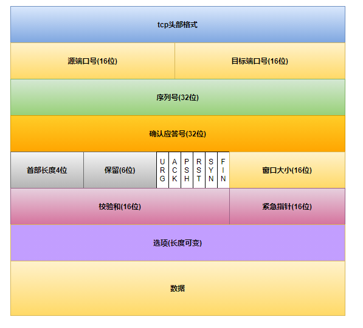
序列号: 在建立连接的时候有计算机生成的随机数并作为初始值，通过syn包传给接收端主机，每发一次数据，就累加一次该数据字节数的大小，主要是用来解决网络包乱序问题
确认应答号:指下一次期望收到的数据的序列号，发送端收到这个确认应答以后可以认为这个序号之前的数据都被正常接收了，主要用来解决不丢包的问题
控制位:
ACK: 该位为1的时候，确认应答字段变得有效，该字段规定除了最初开始建立连接时候syn包之外，改为必须设置为1
RST:该位为1的时候，标识TCP连接中出现异常必须强制断开连接
SYN:该为位1时候，表示希望建立连接，并在序列号的字段进行序列号初始值的设定
FIN:该位为1的时候，表示今后不会再有数据发送，希望断开连接，当通讯结束希望端口连接时,通讯双方的主机之间可以相互交互FIN 位为1的TCP段
为什么需要tcp协议，tcp工作在那一层
IP层是不可靠的，他不保证网络包的交互，不保证网络报的按序交互，也不保证网络包中的数据的完整性，如果需要保证数据的完整性那么就需要TCP层来负责
TCP有哪些特性
面向连接的，可靠的，基于字节流的
建立一个tcp连接需要达成哪些共识
socket：由ip地址和端口号组成
序列号：主要用来解决乱序问题
窗口大小：主要用来做流量控制
TCP四元组
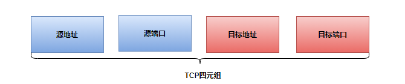
有一个ip的服务器监听了一个端口，他的TCP的最大连接数是多少
对于IP4来说，客服端ip最多为2的32次方(4 294 967 296) 客服端的端口最多为2的16次方(65536) 也就是服务器单机最大的TCP链接数，约为2的48次方最大tcp链接数 = 客服端ip数 * 客服端的端口数
如果服务器不能达到理想数，一般是因为什么原因
首先是文件描述符的限制，Socket都是文件，所以首先要通过 ulimit 配置文件描述符的数目
另一个就是内存限制，每个tcp链接都要占用一定的内存，操作系统的内存是有限的
udp和tcp的区别
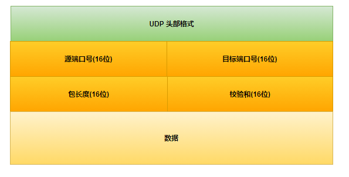
目标和源端口号：主要是告诉udp协议应该吧报文发给那个进程
包长度：保存了UDP首部的长度跟数据的长度之和
校验和：主要是位了提供可靠的udp首部和数据而设计的
区别
-
连接
TCP是面向连接的传输层,传输数据前先要建立链接
UDP是不需要连接的，即可传输数据
-
服务对象
TCP是一对一的两点服务器，即一条连接只有两个端点
UDP是支持一对一，一对多，多对多的交互通信
-
可靠性
TCP是可交互数据的，可以无差错，不丢失，不重复，按需到达
UDP是尽自己最大的努力交互，不保证可靠交互数据
-
拥塞控制，流量控制
TCP有拥塞控制和流量控制机制，保证数据传输的安全性
UDP则没有，即使网络非常堵塞，也不会影响UDP的发送速率
-
首部开销
TCP首部长度较长，会有一定的开销，首部在没有使用选项的时候都能达到20字节，如果使用了选项则会变长 UDP首部只有8个字节，并且是固定不变的，开销较小
-
传输方式
TCP是流失传输，没有边界，但是保证顺序和可靠
UDP是一个包一个包发送，是有边界的，但是可能会丢包和乱序
-
分片不同
MSS就是TCP报文段所允许传送的最大数据部分的长度，主机一般默认MSS为536字节(576IP最大字节数-20字节TCP协议头-20字节IP协议头=536字节)
MTU 最大传输单元,一般1500
TCP数据大小如果大于MSS大小，则会在传输层进行分片，目标主机收到后，也同样在传输层组装TCP数据包，如果中途丢失了一个分片，只需传输丢失的这个分片
UDP的数据大小如果大于MTU大小，则会在IP层进行分片，目标主机在收到后，在IP进行组装数据，接着在传给传输层，但是如果中途丢了一个分片，在实现可靠传输的UDP时则需要重传所有的数据包，这样传输效率非常差，所以通常UDP的报文，应该小于MTU
-
为什么UDP头部没有首部字段，而TCP头部有
原因TCP有可变长的选项字段，而UDP头部长度则不会变化，无需多一个字节去记录UDP的首部长度
-
为什么UDP头部有包长度，而tcp没有
TCP数据的长度 = IP总长度 - IP首部长度 - TCP首部长度
其中 IP 总⻓度 和 IP ⾸部⻓度，在 IP ⾸部格式是已知的。TCP ⾸部⻓度，则是在 TCP ⾸部格式已知的，所以就 可以求得 TCP 数据的⻓度。 ⼤家这时就奇怪了问：“ UDP 也是基于 IP 层的呀，那 UDP 的数据⻓度也可以通过这个公式计算呀？ 为何还要有 「包⻓度」呢？” 这么⼀问，确实感觉 UDP 「包⻓度」是冗余的。 因为为了⽹络设备硬件设计和处理⽅便，⾸部⻓度需要是 44 字节的整数倍。 如果去掉 UDP 「包⻓度」字段，那 UDP ⾸部⻓度就不是 4 字节的整数倍了，所以觉得这可能是为了补全 UDP ⾸部⻓度是 4 字节的整数倍，才补充了「包⻓度」字段
-
为什么MTU是1500
其实一个标准的以太网数据帧大小是：
1518，头信息有14字节，尾部校验和FCS占了4字节，所以真正留给上层协议传输数据的大小就是：1518 - 14 - 4 = 1500，那么，1518这个值又是从哪里来的呢？最根本原因
问题就出在路由器拨号，如果是PC拨号，那么PC会进行PPPoE的封装，会按照MTU:1492来进行以太网帧的封装，即使通过路由器，路由器这时候也只是转发而已，不会进行拆包。
而当用路由器拨号时，PC并不知道路由器的通信方式，会以网卡的设置，默认1500的MTU来进行以太网帧的封装，到达路由器时，由于路由器需要进行PPPoE协议的封装，加上8字节的头信息，这样一来，就必须进行拆包，路由器把这一帧的内容拆成两帧发送，一帧是1492，一帧是8，然后分别加上PPPoE的头进行发送。
平时玩游戏不卡，是因为数据量路由器还处理得过来，而当进行群怪AOE的时候，由于短时间数据量过大，路由器处理不过来，就会发生丢包卡顿的情况，也就掉线了。
帖子里面提到的1480，猜测可能是尽量设小一点，避免二次拨号带来的又一次PPPoE的封装，因为时间久远，没办法回到当时的场景再去抓包了。
TCP 连接建立(3次握手)
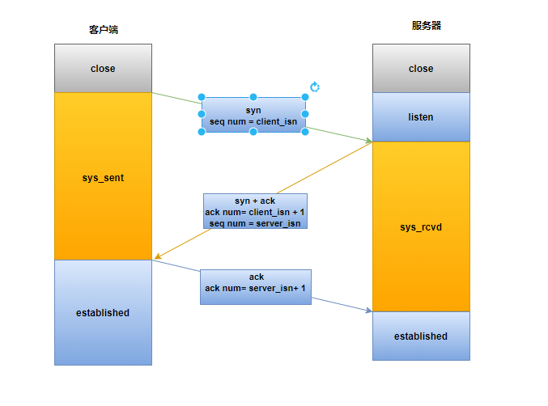
一开始客户端和服务器都处于close状态
-
服务开始监听端口，这个时候服务器处于listen状态
-
客户端会随机初始化序列号 client_isn，然后把这个初始值付给tcp首部的序列号字段，并把标识位syn设置成1，代表这是一个syn包，此包不包含应用层数据，发送出去以后，客服端处于sys_sent状态
**<font color='red'>**三次握手第一个报文 SYN 报文</font>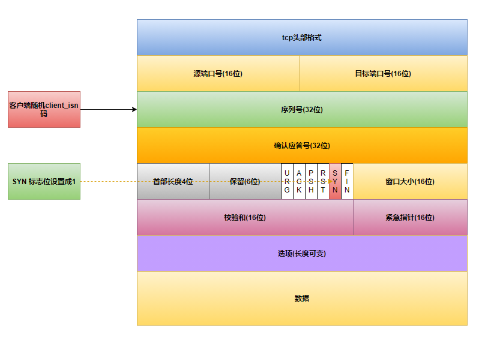
-
服务器收到客户端报文，首先服务器会随机初始化自己的server_isn ,将server _isn号存入序列号中，并把客服端的client_isn +1 存入确认应答号中，同时吧SYN和ACK标志位置为1，此包不会包含应用层数据，发送出去以后服务器进入syc_rcvd状态
**<font color='red'>**三次握手第二个报文 SYN + ACK报文</font>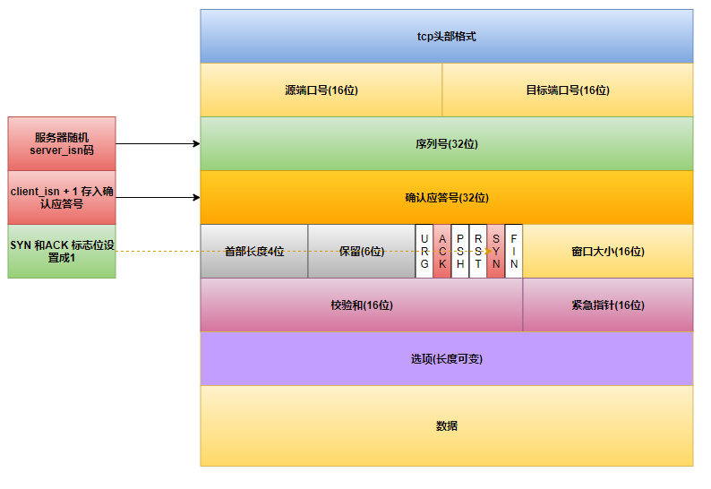
-
客服端收到服务器发送的syn + ack 报文以后，最后还会向服务器发送一个ACK确认报文，并把server_isn 序列号 + 1 存入确认应答号，然后把ACK标志位设置成1，此包这个时候可以带应用层数据发过去，这个时候客户端进入进入established状态，服务器收到ACK确认应答包以后也进入established状态
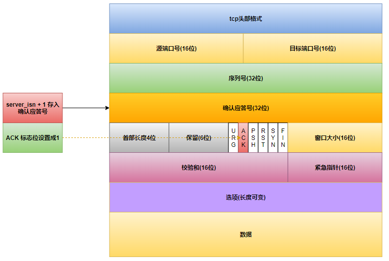
从这一步可以看出前两步是不带数据的，第三步可以带数据发送
为什么握手是3次，不是2次,4次
主要是3个方面
-
可以防止重复历史链接数
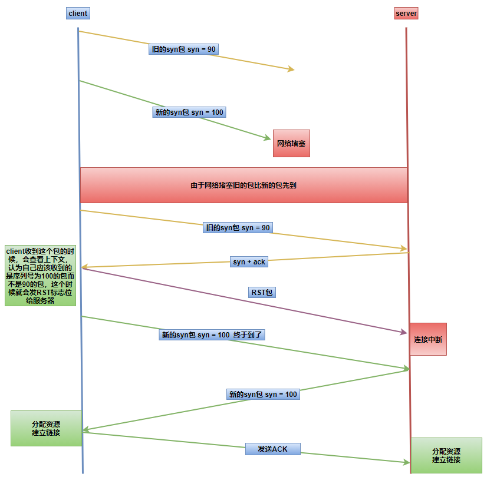
- 同步双方初始序列号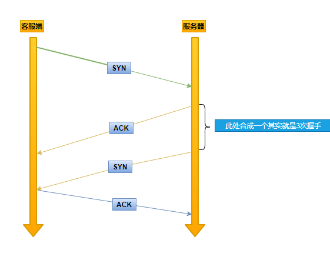
四次握手其实也能够可靠的同步双方的初始化序号，但是由于第二步和第一步可以优化成一步，所以就成了3次握手，
而两次握手只保证了一方的初始序列号能被对方成功接收，没办法保证双方序列号都能被确认接收
-
避免资源浪费
如果只有两次握手，当客服端的syn请求连接在网络中堵塞，客服端没有接收到ACK报文，就会重新发送syn，由于没有第三次握手，服务器不清楚客户端是否收到了自己发送链接的ack确认信号，所以只能自己创建链接，
如果多次堵塞，多次发送syn，那么服务器就会多次创建，造成冗余的链接。
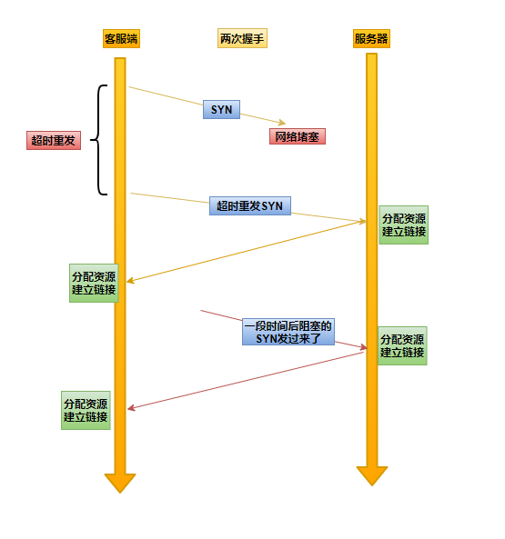
总结：为什么不使用两次握手或者四次握手
两次握手：无法防止历史链接的建立，会造成双方资源的浪费，也无法可靠的同步双方序列号
四次握手：三次握手就已经理论上最少可靠链接建立，所以不需要使用更多的通信次数
为什么客服端和服务器的isn号不相同
- 如果一个已经失效的历史报文残留在网络中，那么如果isn号码相同那么无法分辨到底是不是历史报文，如果历史报文被接受了那么就有可能产生数据错乱，所以每次建立连接前都会初始化一个序列号，好让分辨出来是不是历史报文，好丢弃掉
- 还有一个方面是为了安全，防止黑客伪造相同的tcp报文被对方接收
syn攻击
我们知道tcp链接需要3次握手，假设攻击者短时间内，伪造不同的ip地址syn报文，服务器每接收一个就进入syn_rcvd 状态，但服务器发送出去的ack + syn报文，无法得知位置ip主机的ack应答，久而久之就会占满服务器syn接收队列（未连接队列）使得服务器不能为正常用户服务
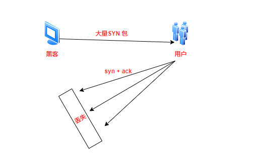
解决办法一
-
控制接收队列大小
net.core.netdev_max_backlog -
SYN_RCVD 状态连接的最大个数
net.ipv4.tcp_max_syn_backlog -
超出处理能力时候对于新的syn 直接发送RST 丢弃链接
net.ipv4.tcp_max_syn_backlog解决方法二
首先是正常的3次握手流程
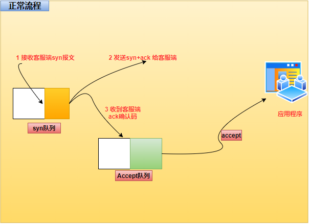
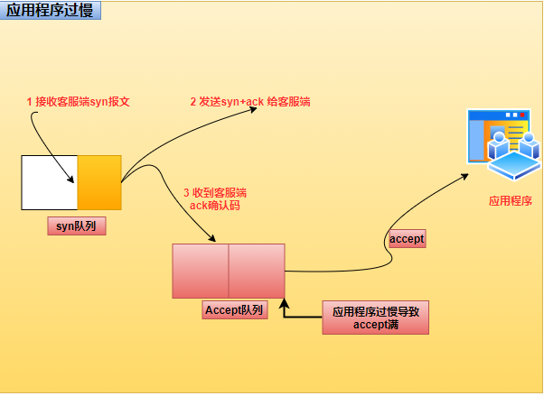
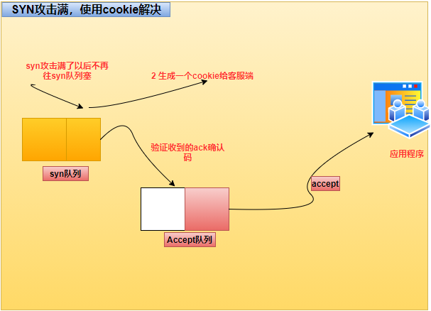
TCP 连接断开
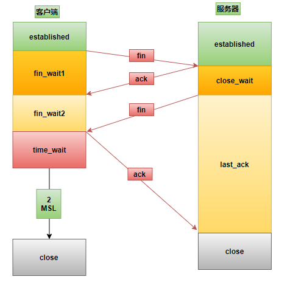
- 客服端，打算关闭连接，此时会发送一个tcp首部FIN标志为1的报文，之后客户端进入fin_wait1状态
- 服务器收到fin报文之后然后发送ack确认码给客服端，开始进入close_wait状态，
- 客服端收到ack确认码以后进入fin_wait2状态
- 服务器处理完数据发送fin报文给客服以后进入last_ack阶段
- 客服端收到fin报文以后发送ack确认码给服务器开始进入time_wait状态
- 服务器接到ack应答报文开始进入close状态
- 客服端经过2msl时间自动进入close状态
你可以看到每个方向都有fin报文和ack应答码，所以简称四次挥手
只有主动关闭的一方才会进入time_wait 状态
为什么挥手需要四次
-
客服端发送fin链接的时候，仅仅表示客户端不在发送数据，但是还能接收数据
-
服务器收到fin报文以后，先回一个ack码，而服务器还有数据需要处理和发送，等服务器不在发送数据
的时候才发送fin报文给客服端
从上可知，因为要等待服务器处理完数据，所以服务器的ack和fin码会分开发
为什么time_wait是2ML
MSL是报文生存最大时间，他在任何报文在网络中存在的最大时间，超过这个时间，报文会被丢弃，因为tcp是基于
IP协议的，在IP协议中有一个TTL字段，是IP层经过的最大路由器数，每经过一个处理，就会减1，一直到0，就把这
个数据包进行丢弃，同时发送icmp报文通知主机
MSL和TTL区别
MSL单位是时间 TTL是路由跳数，所以MSL应该大于TTL消耗为0的时间，以保证报文是自然消亡
TIME_WAIT等于2倍，是因为网络中可能存在发送方发过来的数据包，当这些发送方的数据包被接收方处理后，又会向对方发送响应，所以一来一回需要等待2倍的时间
比如被动关闭方没有收到断开连接的最后的ACK报文，就会触发重发fin报文，另一方收到fin报文后，会重发ack应答码
一来一回正好2ML
2ML是客服端接受到FIN包以后发送ACK码开始计时的，如果在2ML时间内，服务器没有收到ACK确认码，重发了fin报文，那么这个时候客服端会重发ACK码并重新进入2ML计时
2ML一般多长
linux 中一般设置为60s 也就是一个msl是30秒
#define TCP_TIMEWAIT_LEN (60*HZ) /* how long to wait to destroy TIME-WAIT
state, about 60 seconds */
time_wait 相关
time_wait 过多原因
- 大量高并发的短连接
- 程序错误，没有调用close关闭连接
- ack码丢失，导致服务器重新发送fin报文，让time_wait重新进入计时，不会进入close
为什么需要time_wait状态
-
防止旧链接的数据包
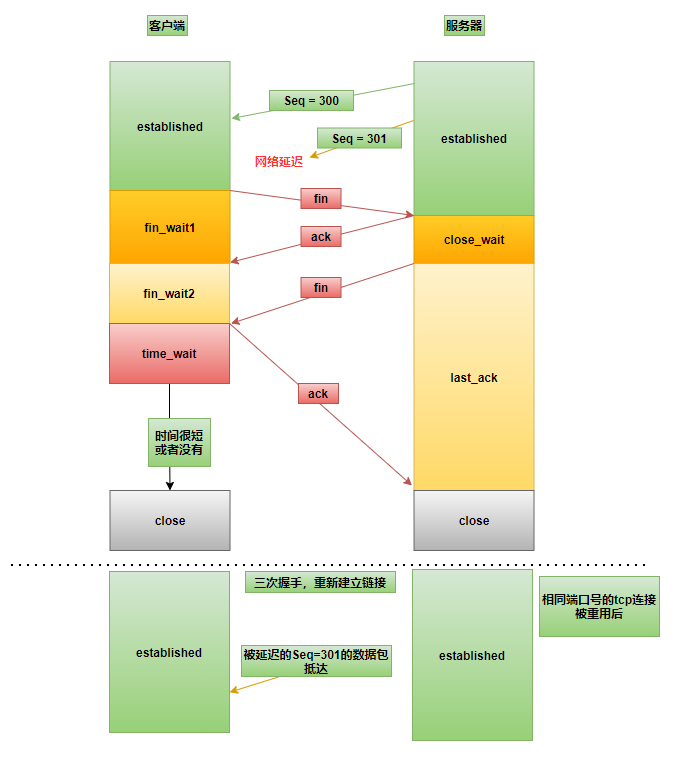
如上图的sql =301的包被网络延迟了，这个时候time_wait设置的时间很短，或者没有，上次的链接的被关闭
这个时候如果重新建立相同端口号的连接被重用，而网络中还有seq =301的消息包这个时候抵达，那么这个
时候客服端收到了旧的数据包，这个时候数据就会错乱，造成问题
如果这个时候有2ML的time_wait时间，那么足够保证在建立新的相同端口连接时候，网络中旧的数据包消亡
-
保证连接正确关闭
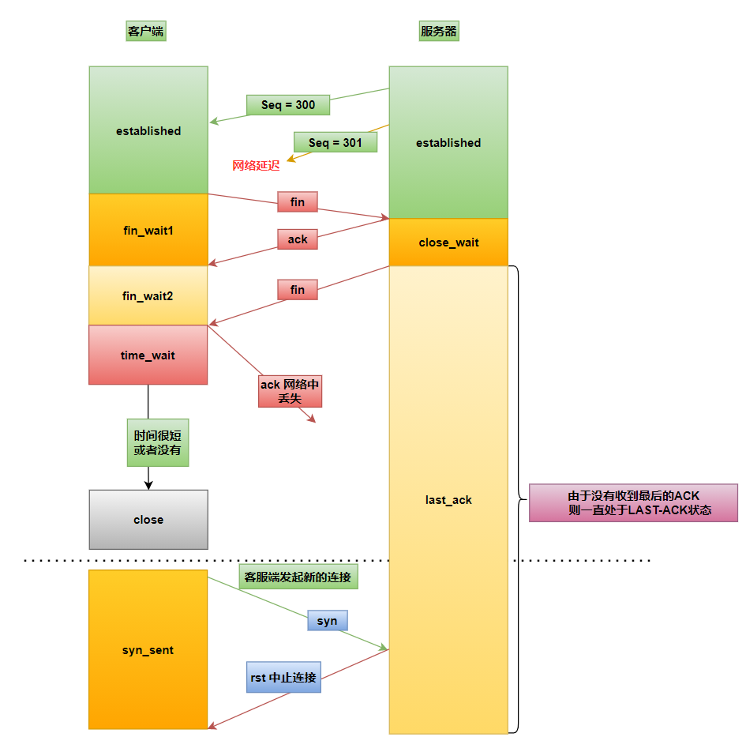
如果最后的ack丢失了，服务器就会一直处于last_ack状态，如果这个时候客服端发起新的连接，那么这个时候服务器因为处于last_ack状态，所以会发送rst报文给客服端，让客服端直接终止链接
time_wait过多会怎么样
如果服务器有处于time_wait状态的tcp 那么说明是服务器主动发起的端开请求
- 内存资源的占用
- 端口资源的占用，端口资源也是有限的
所以如果发起连接的一方time_wait状态过多，占满了所有资源端口，则会导致无法创建新的连接
客户端 time_wait多的话，因为端口资源的限制，就会导致端口资源被占用，被占满就会导致无法创建新的链接
服务器time_wait过多的话，因为系统资源的限制，由于一个四元组表示一个tcp连接，理论上服务器可以创建很多连接，服务器确实也可以监听一个端口，但是这些连接会扔给处理线程，理论上监听的端口可以被继续监听，但是线程池处理不了那么多的一直不断的连接，所以当出现大量time_wait的时候，系统资源就会被占满，导致处理不了新的连接
怎么优化time_wait
-
打开 net.ipv4.tcp_tw_reuse 和 net.ipv4.tcp_timestamps 选项
tcp_tw_reuse 功能只能⽤客户端（连接发起⽅），因为开启了该功能，在调⽤ connect() 函数时，内核会随机找⼀个 time_wait 状态超过 1 秒的连接给新的连接复⽤
-
net.ipv4.tcp_max_tw_buckets
这个值默认为 18000，当系统中处于 TIME_WAIT 的连接⼀旦超过这个值时，系统就会将后⾯的 TIME_WAIT 连接 状态重置
-
程序中使⽤ SO_LINGER ，应⽤强制使⽤ RST 关闭。
close_wait 相关
close_wait 多的原因
一般都是程序逻辑造成，在client发送fin过来的时候，这边进入了close_wait状态，但是因为程序逻辑问题，迟迟没有调用close()，或者shutdown函数进行关闭，导致close_wait超多
如果已经建⽴了连接，但是客户端突然出现故障了怎么办
net.ipv4.tcp_keepalive_time=7200 #表示保活时间是 7200 秒（2⼩时），也就 2 ⼩时内如果没有任何连接相关的活
动，则会启动保活机制
net.ipv4.tcp_keepalive_intvl=75 #表示每次检测间隔 75 秒
net.ipv4.tcp_keepalive_probes=9 #表示检测 9 次⽆响应，认为对⽅是不可达的，从⽽中断本次的连接
主要是tcp的保活机制，如果在一段时间内，没有任何的连接相关的活动，tcp就会启动保活机制，每隔一段时间发送一个探测包，这个探测包数据量很小，如果连续几个探测包发过去都没有反应，那么就可以认为tcp连接已经死亡了
开启了tcp保活机制以后，需要考虑一下几种情况
- 对端程序正常工作，当tcp保活的探测包到达对方以后，对方正常响应，这个时候保活机制就会被重置
- 对端程序奔溃并重启，当tcp保活的探测包到达以后，由于对方没有相关的tcp连接信息，这个时候会发送rst报文给对方，这样很快就可以发现tcp连接已经重置了
- 如果对方一直奔溃，当tcp报文一直发送，发送几次后没有反馈，那么这个时候就可以认为tcp连接已经死亡
服务器主动关闭
- 服务器调用close(),不管什么数据一缕发送rst报文进行强制关闭
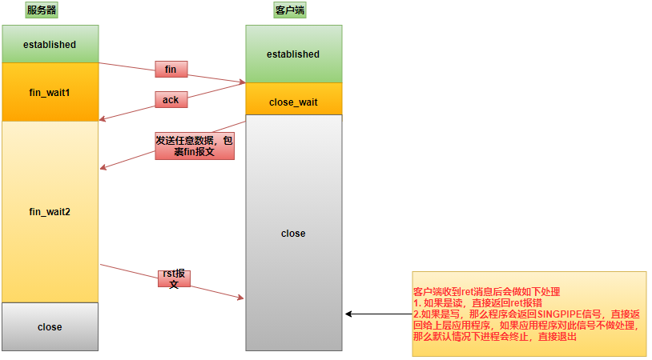
-
服务器调用shutdown() ，如果是正常数据还是走正常数据接收流程，一直到数据发送完毕，然后发送fin报文正常关闭
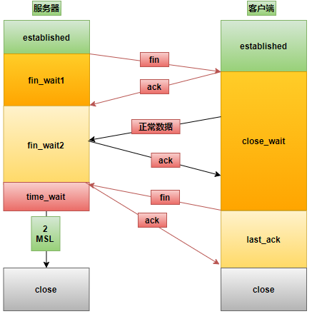
tcp重传
超时重传
指的是我们在发送数据的时候，会设定一个定时器，当超过定时器设定的时间，我们在没有收到对方的ack确认码之后就会触发重传机制
触发超时重传条件
-
数据包丢失，因为数据包丢失，所以B无法发送ack确认码下去，A无法收到ACK确认码，无法知道服务器是否收到数据就会在特定时间间隔内，触发重传
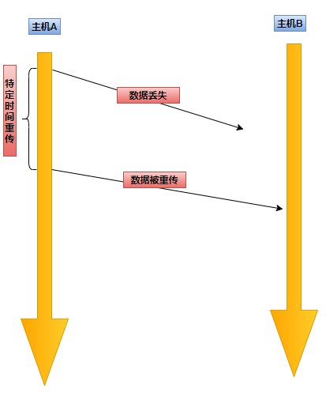
-
确认应答丢失
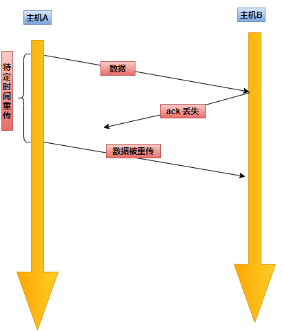
超时重传时间设置多少最好
-
RTT 包的往返时间
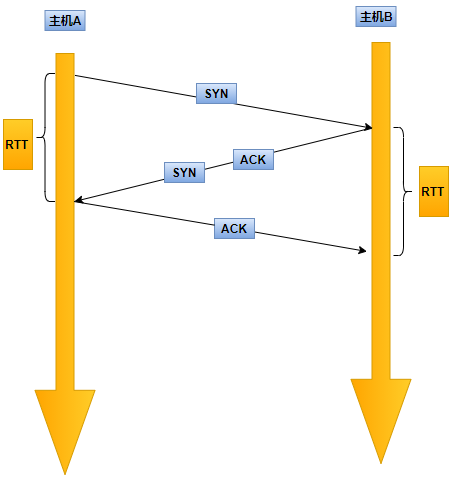
-
时间设置的过长过短发生的情况
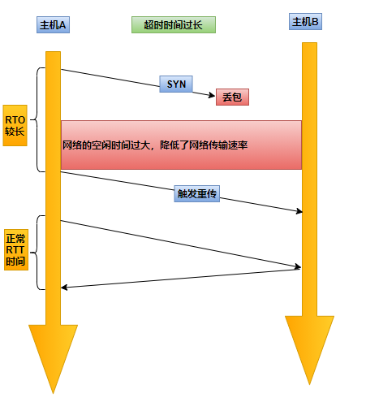
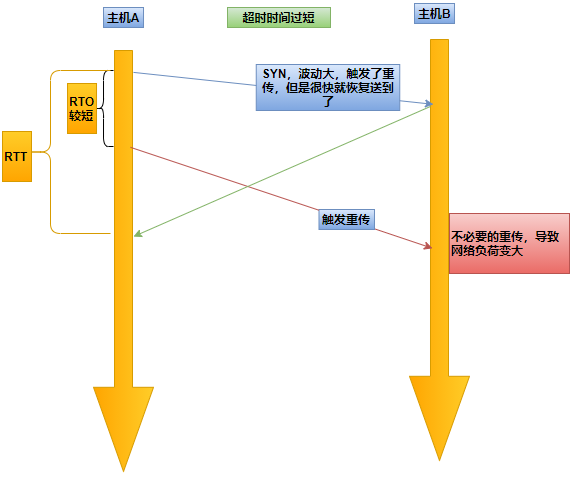
-
当RTO较大时候，重发就满，丢了老半天才重发，没有效率，性能差
当RTO较小时候，可能是因为波动大，然后设置RTO又短，这个时候触发了重传，但是旧包却很快恢复了传输
所有综合上述，所以我们应该 RTO应该略大于RTT
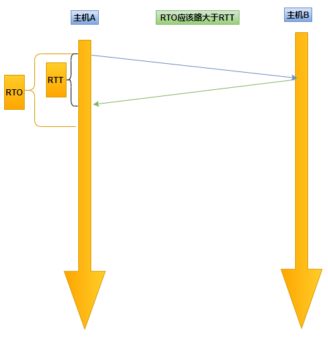
快速重传
这个不是以时间为驱动，而是以数据为驱动
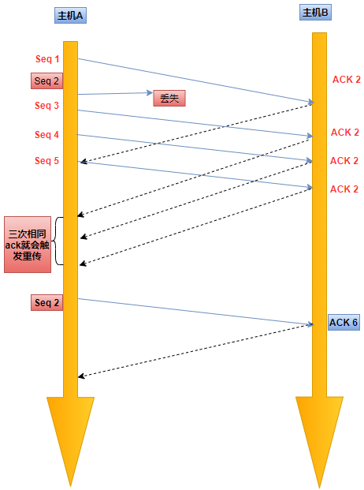
如上发了1，2，3，4，5 共5份数据
1号数据发过去了，这个时候ACK变成了2
2号数据这个时候丢失了，
3号数据这个时候进行了发送，但是接收端回复ACK的时候不会是3而会还是原来丢包的那个ACK2
4号数据这个时候进行了发送，还是发送ACK2
5号数据这个时候进行了发送，还是发送ACK2
这个时候发送端发现有3次相同的ack码就会触发重传，这个是seq2会在定时器过期之前重传过去了，这个时候接收端
发现了seq2，3，4，5都收到了，那么就会把ACK设置成6
SACK
解决快速重传应该重传所有还是重传丢失者问题
SACK方法[如果能支持SACK，那么必须双方都打开]
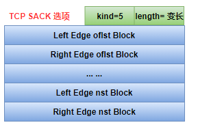
Left Edge:代表已收到的第一个不连续的第一个序号
Right Edge:表示已收到的不连续块的最后一个序号+1
即左闭右开区间，通过ACK和sack发送方就能很快的确定接收方有哪些数据没有被收到
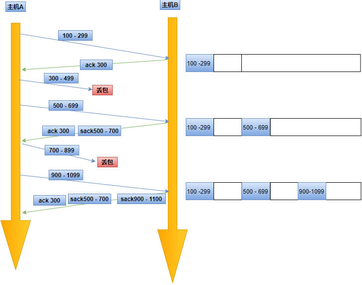
如果上面触发了重传会这样处理
直接重传300 -499丢失的块，然后把ack变成700再次触发快速重传把700 -899补上
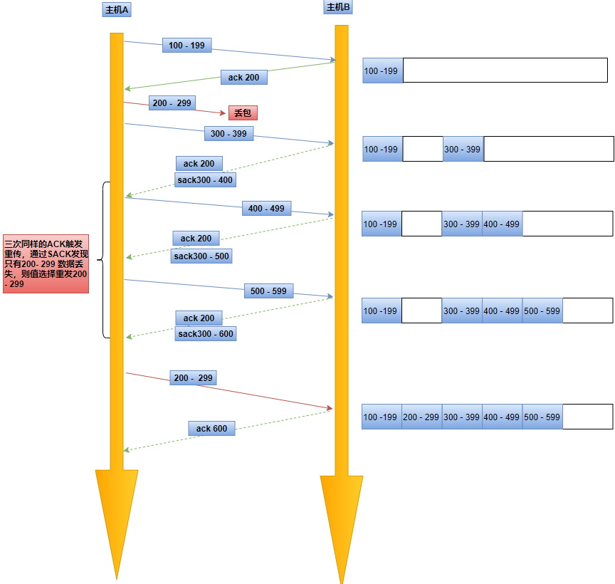
DACK
主要是告诉发送方，主要通过SACK告诉发送方有哪些数据被重复接受了
-
ACK 丢包
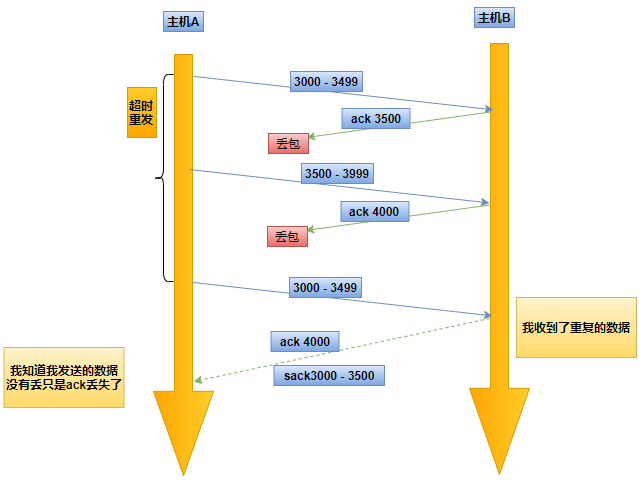
-
接收方发送给发送方的2个ack都丢失了，所以发送方超时后，重传了第一个数据包3000 - 3499
-
接收方发现数据是收到的是重复数据，于是回了一个sack= 3000 - 3500 告诉发送方3000 - 3500的
数据早就被接受了，因为现在ack已经到了4000 所以意味着这个sack代表的是dack
-
这样发送方就知道了数据其实没有丢，只是接收方的ack确认报文丢失了
-
-
网络延迟
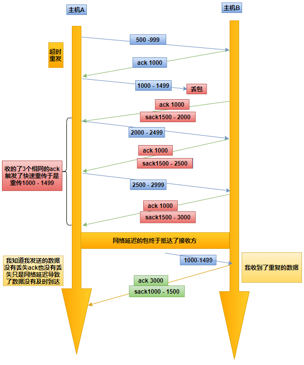
-
数据包 1000- 1499 被网络延迟了，导致发送方没有收到ack1500的确认报文
-
而后面收到了3个相同的ack报文，触发了快速重传，但是在重传以后，网络延迟的1000 -1499也抵达了接收方
所以接收方回了一个ack3000 和sack 1000 -1500 所以这个时候sack代表的就是dack，代表这是一个重复的报文
-
这样发送方就知道快速重传的原因不是发数据丢了，也不是ack丢了，只是网络延迟了
可见dack有这么几个好处
- 可以让发送方知道是包丢了
- 还是接收方的ack丢了
- 还是发送方的数据包被网络延迟了
- 可以知道网络中是不是把发送方的数据包给复制了
-
滑动窗口
我们知道TCP每发送一个数据，就会进行一次确认应答，当上一个数据包收到了应答，在发送下一个，这个模式有点像
两个人聊天，你发一句，然后我给你个ack报文，我发一句，然后你给我一个ack报文，这样其实效率很低的。
如果你说完一句话，我在处理别的事情，没有及时给你回复ack报文，那么你就只能干等着，一直等到我处理完事情， 然后给你回复ack码，这样处理的话效率太低了，如果是这个逻辑，那么tcp协议也就不用在完了
所以这样的传输方式很大的弊端：就是包的往返时间越长，网络的吞吐就越大
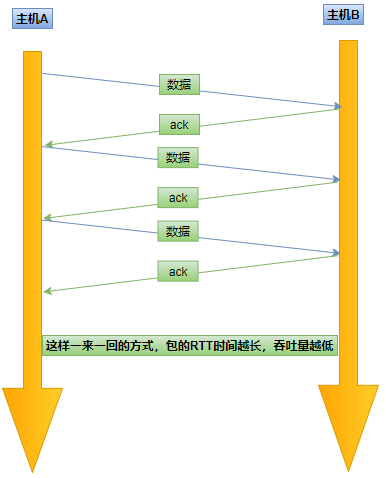
为了解决这样的问题，TCP发明了一个牛逼的概念：****滑动窗口
如果有了滑动窗口，那么就可以指定窗口的大小，窗口的大小无需等待对方的确认应答，就可以继续发送数据的最大值
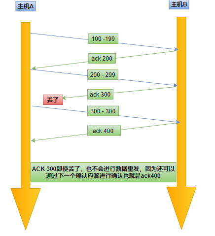
上面ack300 即使丢了，但是因为我们收到了ack400 那么我们就可以认为400之前的数据都收到了，这种方式我们称为累计确认
窗口大小由哪一方决定
tcp头里面有个字段叫window 也就是窗口大小
这个字段是接收方告诉发送方自己还有多少缓冲区可以接受数据，于是发送方就靠这个字段来知道接收方能接收多少数据，而不会导致接收方接收不过来
所以窗口的大小，一般由接收方窗口的大小来决定
发送方，发送的数据不能超过接收方窗口的大小，否则接收方就无法接受数据
发送窗口
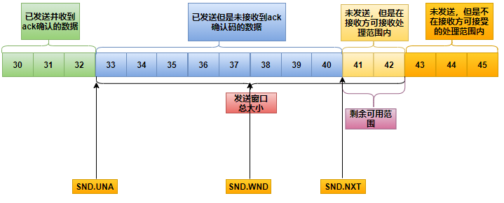
SND.WND : 表示发送窗口的大小,由接收窗口控制
SND.UNA : 表示已发送但未确认ack报文的空间的第一个字节位置
SND.NET : 表示未发送但是还在接收窗口可处理空间的第一个字节位置
可用窗口大小 = SND.WND - (SND.NXT - SND.UNA)
发送端窗口大小怎么控制的
取决于接收端的大小[rwnd]和拥塞窗口[cwnd]的大小
发送窗口 = min{rwnd,cwnd}
接收窗口
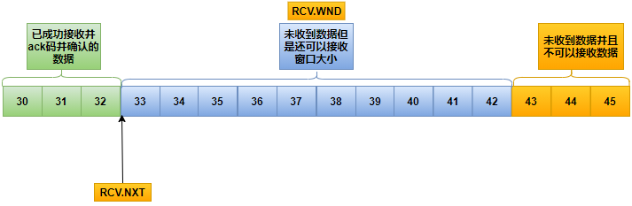
RCV.NXT : 希望从发送方发过来的下一个字节数据的序列号
RCV.WND : 接收窗口的大小，会通过tcp头部报文里面的window字段，通知发送窗口大小
接收窗口大小怎么控制的
接收窗口的大小系统，网速，未处理数据的大小都有关系
发送窗口大小和接收窗口大小一样吗
不完全相等，一般接收窗口略等于发送窗口
流量控制
发送方不是无脑的一直发送数据给接收方的，也要考虑接收方的接收能力。
如果一直无脑的发数据给对方，但对方处理不过来，就会触发重传机制，从而导致网络流量的无端浪费
为了解决这个问题，引入了流量控制
固定窗口大小场景
- 假设接收端和发送端窗口相同，都为200
- 假设两个设备在传输过程中都保证窗口大小不变，不收外界影响
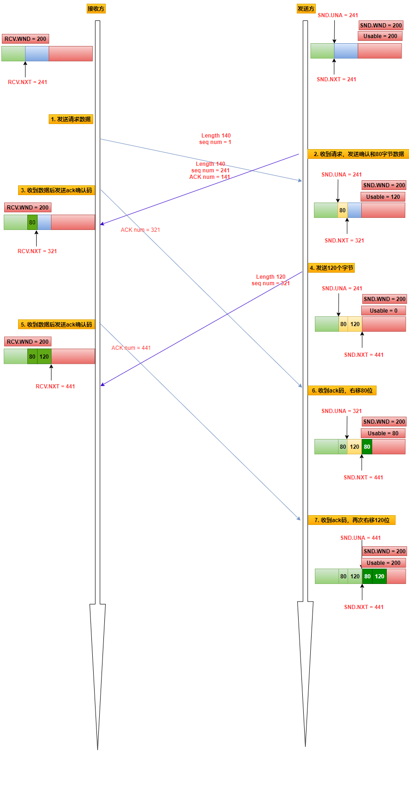
动态变化窗口大小场景
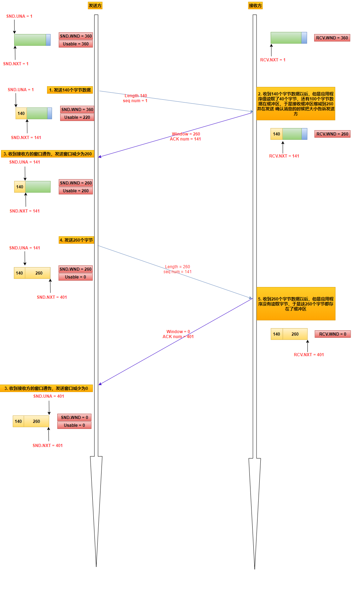
当发送方变成窗口变成0的时候其实发送方还会定时的发送探测报文，以便知道接收方改变了窗口
丢包情况
当服务端系统资源⾮常紧张的时候，操⼼系统可能会直接减少了接收缓冲区⼤⼩，这时应⽤程序⼜⽆法及时读取缓 存数据，那么这时候就有严᯿的事情发⽣了，会出现数据包丢失的现象。
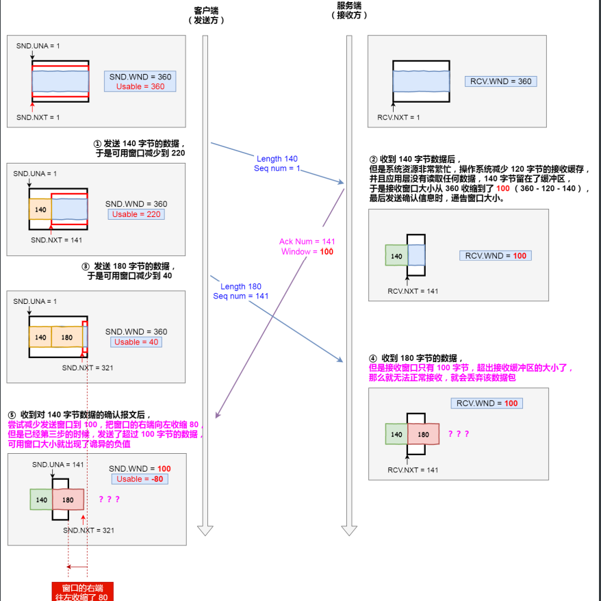
为了避免这种情况 TCP规定不允许系统收缩缓存的时候同时减少窗口大小，而是采用先收缩窗口，过段时间在减少缓存的办法
窗口关闭死锁问题

如果解决这种死锁问题
为了解决这种死锁问题，TCP为每个连接设有与一个持续定时器如果定时器超时就会发送窗口探测报文
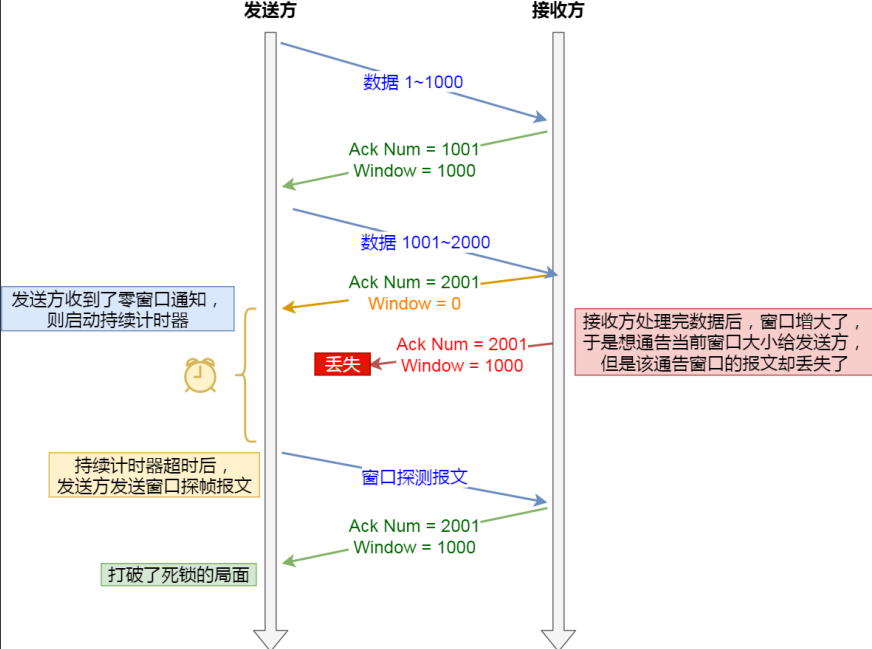
- 如果接收窗⼝仍然为 0，那么收到这个报⽂的⼀⽅就会᯿新启动持续计时器；
- 如果接收窗⼝不是 0，那么死锁的局⾯就可以被打破了。
窗⼝探测的次数⼀般为 3 次，每次⼤约 30-60 秒（不同的实现可能会不⼀样）。如果 3 次过后接收窗⼝还是 0 的 话，有的 TCP 实现就会发 RST 报⽂来中断连接。
糊涂窗口综合症
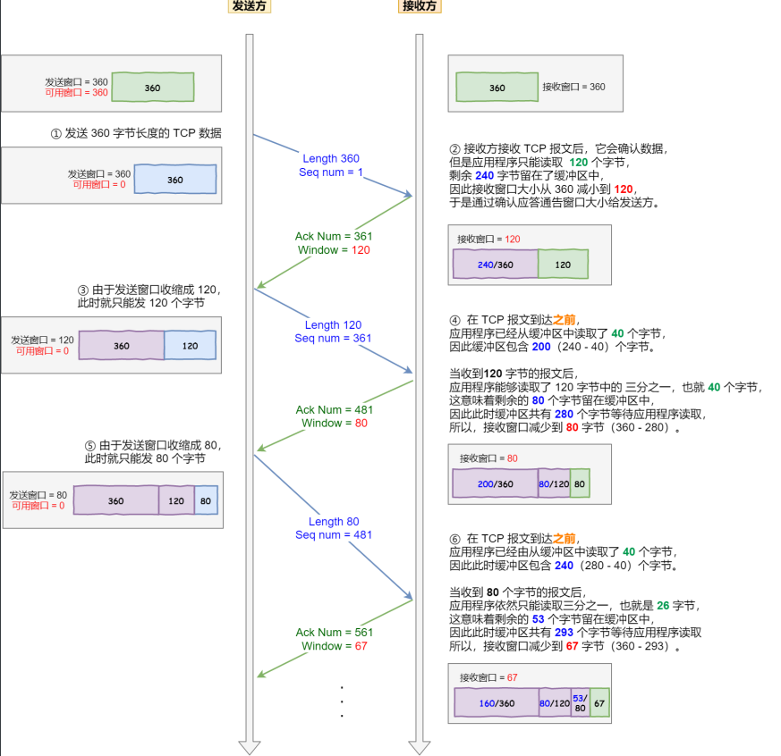
于是，要解决糊涂窗⼝综合症，就解决上⾯两个问题就可以了
- 让接收⽅不通告⼩窗⼝给发送⽅
- 让发送⽅避免发送⼩数据
-
怎么让接收⽅不通告⼩窗⼝呢？
接收⽅通常的策略
当「窗⼝⼤⼩」⼩于 min( MSS，缓存空间/2 ) ，也就是⼩于 MSS 与 1/2 缓存⼤⼩中的最⼩值时，就会向发送⽅通 告窗⼝为 0 ，也就阻⽌了发送⽅再发数据过来。 等到接收⽅处理了⼀些数据后，窗⼝⼤⼩ >= MSS，或者接收⽅缓存空间有⼀半可以使⽤，就可以把窗⼝打开让发 送⽅发送数据过来。
-
怎么让发送⽅避免发送⼩数据呢？
发送方策略
使⽤ Nagle 算法，该算法的思路是延时处理，它满⾜以下两个条件中的⼀条才可以发送数据：
- 要等到窗⼝⼤⼩ >= MSS 或是 数据⼤⼩ >= MSS
- 收到之前发送数据的 ack 回包
拥塞控制
前面的流量控制主要是为了解决发送方到接收方的缓存，但是不知道网络中发生了什么
一般来说，计算机网络是个共享的环境，因此也有可能会因为其他主机之间的通信，而是网络堵塞
如果在网络堵塞的时候继续发送大量的数据包，那么就可能导致数据包的时延，丢失等，这个时候tcp就会重传数据，但是一重传，就会导致网络的负担更重，于是就会导致更大的延迟和丢包，甚至进入恶性循环
于是现在就有了拥塞控制手段，这个手段主要控制的是控制发送方数据充满网络
为了让发送方控制发送数据的量，于是就有了拥塞窗口的概念
拥塞窗口和发送窗口的关系
拥塞窗口cwnd是发送方维护的一个状态变量，他会根据网络动态变化
前面我们提到的swnd和rwnd是约等于的关系，那么假如cwnd概念以后，此时发送窗口的值是
swnd = min(cwnd,rwnd)
拥塞窗口的变化规则
- 只要网络中没有堵塞，那么就加大cwnd的数值
- 如果网络中出现了拥塞，cwnd就减少
怎么知道当前网络出现了拥塞
只要发送方在没有规定的时间内接受到ack确认码，也就是发生了超时重传，就认为网络中出现了拥塞
拥塞控制有哪些算法
- 慢启动
- 拥塞避免
- 拥塞发生
- 快速恢复
慢启动
慢启动的算法就是，当发送方每收到一个ack，拥塞窗口cwnd的大小就加1
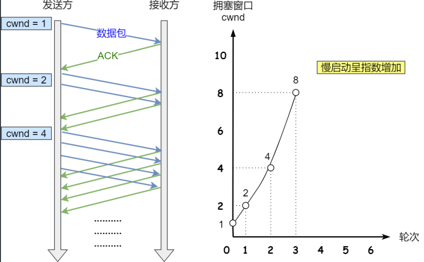
那么慢启动什么时候是个头呢，
有一个叫慢启动的门限ssthresh
当 cwnd < ssthresh 时使用慢启动
当 cwnd >= sssthresh 时启动拥塞避免
拥塞避免
它的规则是：每当收到⼀个 ACK 时，cwnd 增加 1/cwnd
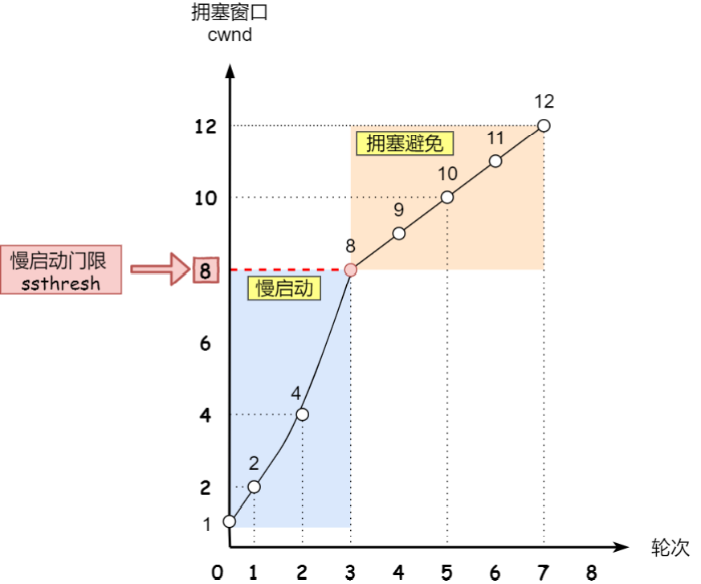
拥塞避免算法就是将原本慢启动算法的指数增⻓变成了线性增⻓，还是增⻓阶段，但是增⻓ 速度缓慢了⼀些。 就这么⼀直增⻓着后，⽹络就会慢慢进⼊了拥塞的状况了，于是就会出现丢包现象，这时就需要对丢失的数据包进 ⾏᯿传。 当触发了᯿传机制，也就进⼊了拥塞发⽣算法。
拥塞发生
其实这个时候就是写的tcp重传机制主要是两种
超时重传
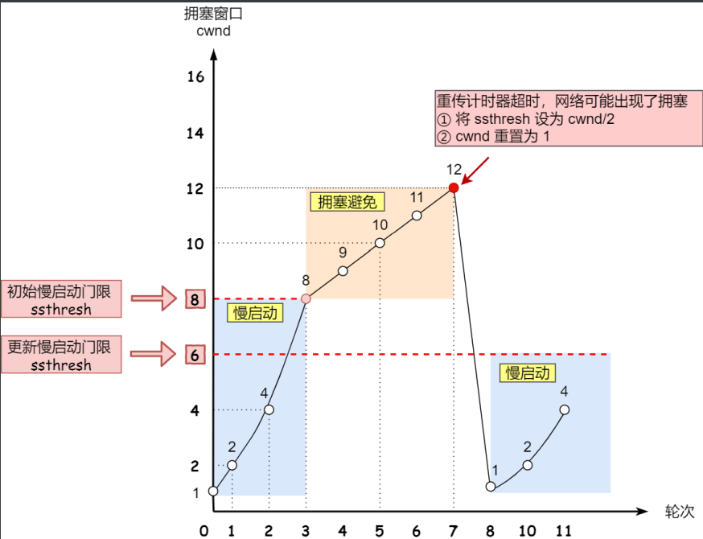
因为想途中的cwnd从12突然变到了1，然后开始慢启动，可以看到此种方法很容易马上回到解放前，方法也很激进，容易造成网络卡顿，那么发生这种情况我们还有没有更好的办法呢，其实有的也就是前面写的快速重传
在收到3次相同的ack码的时候我们可以在超时重传还没发生之前就重传数据过去，而不必等到超时重传
这个时候tcp认为这中情况也不是很严重那么我们可以这样设置参数
- cwnd = cwnd/2 ，也就是设置为原来的⼀半
- ssthresh = cwnd
- 进⼊快速恢复算法
快速恢复
由于进入快速恢复之前 cwnd和ssthresh已经进行了更新
-
cwnd = cwnd/2 ，也就是设置为原来的⼀半
-
ssthresh = cwnd
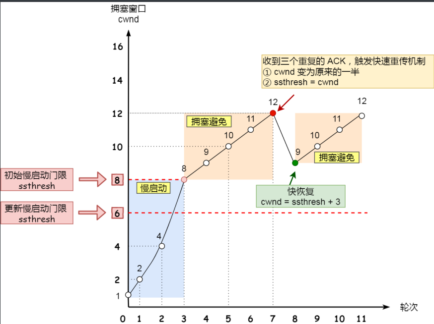
快速恢复算法如下
- 拥塞窗口 cwnd = ssthresh + 3 3的意思代表确认有3个数据包已经收到了
- 重传丢失的数据包
- 如果在收到重复的数据包那么cwnd + 1
- 如果收到新数据的ack 那么吧cwnd 设置成第一个不的ssthresh的值，原因是该ack已经确认了新的数据，说明从dack时候的数据已经都收到了，该恢复过程已经结束，那么就可以恢复到之前的状态了，也就是可以再次进入拥塞避免状态
粘包
粘包的问题是不知道消息的边界在哪里，如果知道边界在哪里就好办了。所以有如下3种方法解决
固定长度
就是规定每一个包固定的长度，比如20KB，当收到了20KB的数据满了之后，就认为是一个包,但是这种方法灵活性不高，用的很少
特殊字符做边界
比如像HTTP这种直接在尾部加回车，换行来作为数据的边界，但是这种方法有个问题，就是如果特殊字符是内容，那么就需要对这个数据做特殊处理
自定义消息结构
我们可以自己定义消息结构，由包头 + 数据组成 在包头里面有一个字段是用来表示数据包的大小的，如下:
struct {
int32 message_length;
char message_data[];
} message;
这样当客服端可以先解析包头里面消息的长度，然后在读满这个长度大小的数据，就可以认为收到了一个完整的包
RST 标识
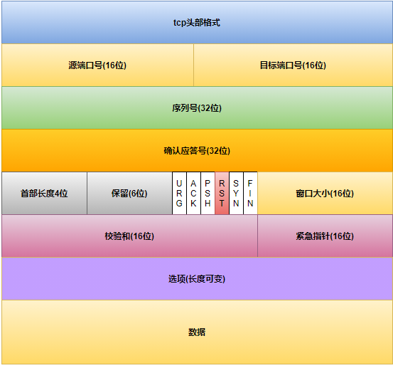
收到RST应用层处理情况
- 如果应用层尝试去读，比如
recv应用层就会收到Connection reset by peer意思是连接被重置 - 如果应用层尝试去写，比如
send应用层就会收到Broken pipe意思是这个通道已经坏了
RST出现的场景
RST 一般出现在异常情况，一般为 对端的端口不可用和 socket 提前关闭
端口不可用
-
端口未监听
服务器
Listen方法会创建一个sock放入全局的哈希表中，当客服端来连接的时候，会根据ip和端口从这个hash表中去获取sock
端口未监听一定会发送 RST吗
不一定因为在知道服务器没有 listen过，不会立马发送 RST报文，而是会进行 校验和检查,只有在校验和没有问题的时候才会发 RST给对端
校验和可以验证数据从端到端是否出现了异常，由发送端计算，然后接收端效验，计算范围覆盖数据包的tcp首部和tcp数据
为什么一定要先进行效验和，通过以后才发送RST
一般校验和出现了问题这个时候一般都是包被篡改了，或者是一个数据紊乱伪造的包
在网络的5层协议中，如果出现这中问题，一般的做法都是丢弃，而不是傻乎乎的恢复一个包给对方
如果是 TCP协议，因为是可靠的，所以丢了也没有事情，当没有接到对端的 ACK的时候，会重传
如果是 UDP协议，因为是不可靠传输的，接收端已经接收了不可靠的这中情况，那么丢了就丢了
程序启动了但是崩了
这个和端口未监听差不多，因为程序崩了，资源就会释放，那么就会进入 Close状态，重启了以后，客服端新的连接进来的时候去全局的 hash表根据 IP地址和 端口查找，却找不到 Sock这个时候如果校验和通过了，那么也会发送 RST报文过去
socket提前关闭
本端提前关闭
如果本端 socket接收缓冲区还有数据，此时提前 close() socket 那么本端会先把接 收缓冲区的数据清空，然后给远端一个 RST
远端提前关闭
远端已经 close()这个时候本地还尝试给远端发送数据，这个时候远端会给本端回一个 RST
大家知道，TCP是全双工通信，意思是发送数据的同时，还可以接收数据。
Close()的含义是，此时要同时关闭发送和接收消息的功能。
客户端执行 close()， 正常情况下，会发出第一次挥手FIN，然后服务端回第二次挥手 ACK。如果在第二次和第三次挥手之间，如果服务方还尝试传数据给客户端，那么客户端不仅不收这个消息，还会发一个 RST消息到服务端。直接结束掉这次连接。
RST包丢了怎么办
RST丢了，问题不大，比如说上方的图，服务器发了 RST之后，就认为服务器连接不可用了
如果发送 RST之前，客服端发送了数据，客服端没有等到 ACK确认码，这个时候就会重发，重发的时候，服务器也会返回 RST包
如果在发送 RST之前，客服端没有发送数据，那么因为有 keepalive 机制，会定期发送探活包，这种数据到了服务器，可以触发一个 RST包
收到RST一定会端开吗
不一定会端开，因为在收到 RST之后，会进行检查 seq是否合法，其实也是看这个 seq是不是在合法的接收范围内，如果不在就丢弃这个 RST包
至于这个接收窗口是啥，如下图
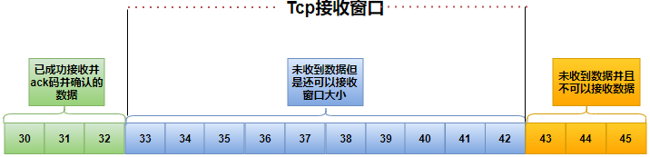
为什么一定要校验在范围内
因为如果不校验的话，不怀好意的第三方伪造了 seq的包，这个时候就会让客服端或者服务断开连接，如果效验的话毕竟因为窗口是在不断变化的，seq也在不断的变化，所以在范围内的 seq很难被伪造出来
socket recv和send 情况
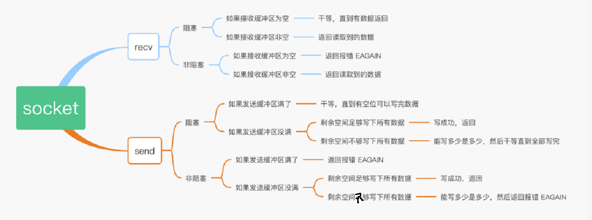
如果接收缓冲区有数据，这个时候close
如果接收缓冲区还有数据未读，会先把接收缓冲区的数据清空，然后给对端发送一个 RST
如果接收缓存区是空的，那么就会发送 FIN，开始正常的四次挥手过程
如果发送缓冲区有数据，这个时候close
socket 是个先进先出的队列，这个时候内核会把最后一块数据的标识置位 FIN，然后安静的等待内核把数据都发出去
UDP
udp有发送缓冲区吗
udp也是socket， 只要是socket就会有发和收两个缓冲区，和什么协议无关
udp用发送缓冲区吗
一般情况下，会把数据拷贝到发送缓存区后直接发送
一些网络异常回答
在没有开启 TCP keepalive，且双方一直没有数据交互的情况下，如果客户端的「主机崩溃」了，会发生什么。
即使没有开启 TCP keepalive，且双方也没有数据交互的情况下，如果其中一方的进程发生了崩溃，这个过程操作系统是可以感知的到的，于是就会发送 FIN 报文给对方，然后与对方进行 TCP 四次挥手
如果有数据传输，那么就的分两种情况
-
客户端宕机，然后立马重启。
在客户宕机的时候，服务器一直接不到
ACK确认码，这个时候就会触发重传如果客户端没有进程监听这个
TCP报文的目标端口号，由于找不到目标端口号，那么客服端就会发送RST包，重置改连接如果客户端有进程监听这个
TCP报文，这个时候重启，之前的TCP连接的socket结构体数据都会丢失，这个时候客户端找不到该TCP相关的socket数据，也会发送RST包 -
客户端宕机，一直没有重启
服务器就会触发超时重传报文机制，一般
15次，不过tcp超时重传不止基于15次判断，还会基于最大超时时间来判定，也就是先达到最大超传次数或者最大超时时间，就会判定TCP有问题，就会停止重传